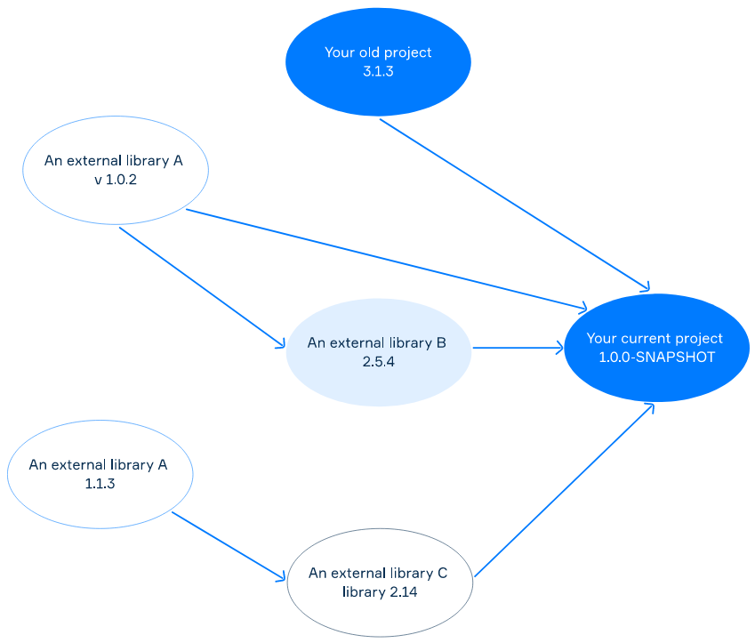

Small programs you write when you’re learning Java may not use any external libraries at all. When you need something, you find it in the Java Class Library or create it yourself. In real projects, you often need external frameworks and libraries to reuse existing solutions. It is better than writing everything yourself because external libraries can be written once, tested, and used by millions of people around the world.
These external libraries used in a project are called dependencies. As a rule, they are packaged in JAR (Java ARchive) files.
Keeping your project updated with the correct versions of dependencies can be quite difficult. An external library may need other libraries or another version of the same library you're using. Downloading and managing all these dependencies is a tedious task. The picture below demonstrates possible problems that may occur with dependencies when developing a project.

Some possible problems with dependencies
Dependencies become even more problematic if your project has tens or hundreds of external libraries. The automatic dependency management mechanism can greatly simplify your work.
The dependency management feature in Maven automatically downloads external libraries and adds them to the project. It can also solve different conflict cases.
You should specify your project dependencies inside the dependencies section in the POM file. To declare a dependency on an external library, you need to provide the groupId, artifactId, and the version of this library. Maven will identify this library, download it and add it to the project.
We assume that you have a POM without dependencies. As an example, let's add a dependency to a lightweight mathematics and statistics library named Commons Math, and a dependency on the junit framework for testing.
<dependencies>
<dependency>
<groupId>org.apache.commons</groupId>
<artifactId>commons-math3</artifactId>
<version>3.2</version>
</dependency>
<dependency>
<groupId>junit</groupId>
<artifactId>junit</artifactId>
<version>4.11</version>
<scope>test</scope>
</dependency>
</dependencies>When Maven builds this project, the two dependencies will be downloaded and placed in your local Maven repository. If the dependencies are already there, Maven will not download them again.
The second dependency (junit) has a scope element, which means that this dependency is available only in the testing phase and unavailable during the program execution. The first dependency does not have the scope element which means it is always available. In this topic, we will not be considering scope.
After you have a dependency on a library, you can use it in your program. Let's read two complex numbers and then display their sum.
import org.apache.commons.math3.complex.Complex; // an external library
import java.util.Scanner;
public class App {
public static void main(String[] args) {
Scanner scanner = new Scanner(System.in);
double c1Im = scanner.nextDouble();
double c1Re = scanner.nextDouble();
double c2Im = scanner.nextDouble();
double c2Re = scanner.nextDouble();
Complex c1 = new Complex(c1Im, c1Re);
Complex c2 = new Complex(c2Im, c2Re);
Complex result = c1.add(c2);
System.out.println(result);
}
}Let's build this program:
mvn clean packageIt should be compiled and packaged successfully because we have all the necessary dependencies in the POM. After completing this command, there will be a JAR file with your program in the target directory.
Let's start it (this is an example on Linux):
java -cp target/complex-summator-1.0-SNAPSHOT.jar md.tekwill.AppThen we enter real and imaginary parts for both input complex numbers:
1.5 3.2 2.4 5.1Unfortunately, the program throws an exception:
Exception in thread "main" java.lang.NoClassDefFoundError: org/apache/commons/math3/complex/Complex
at md.tekwill.App.main(App.java:15)
Caused by: java.lang.ClassNotFoundException: org.apache.commons.math3.complex.Complex
at java.base/jdk.internal.loader.BuiltinClassLoader.loadClass(BuiltinClassLoader.java:582)
at java.base/jdk.internal.loader.ClassLoaders$AppClassLoader.loadClass(ClassLoaders.java:185)
at java.base/java.lang.ClassLoader.loadClass(ClassLoader.java:496)
... 1 moreThe problem is that the JAR does not include the commons-math3 library that Maven used when building this project. This might surprise people who use an IDE (e.g. IntelliJ IDEA), they are used to starting the program "from the IDE" by just clicking RUN. The thing is that the IDE actually adds these libraries when the program starts.
To do the same, you should add the library to the classpath. We can get external JARs from the local Maven repository or create a special directory with all the necessary libraries. Now, let's try to use the first approach.
: separator for multiple jarsjava -cp ~/.m2/repository/org/apache/commons/commons-math3/3.2/commons-math3-3.2.jar:target/complex-summator-1.0-SNAPSHOT.jar md.tekwill.App Windows: use the ; separator for multiple jars
...Now, if we input the same numbers as above the program outputs:
(3.9, 8.3)This approach can be complicated when you have a large number of external dependencies. In the following lessons, we will see how to avoid this exception by using Maven plugins.
Executable JAR means that all needed external libraries are stored within a single JAR. You do not need to specify the classpath to start it. You can use build plugins to create an executable JAR. There are several plugins that allow you to do that in different ways.
We will use maven-assembly-plugin, which is one of the easiest. It is primarily intended to aggregate the project output along with its dependencies into a single "uber-jar". Currently, the plugin can create distributions in the following formats: .zip, .tar.gz, .jar, and others.
To use the plugin, add the following section to your POM:
<build>
<plugins>
<plugin>
<groupId>org.apache.maven.plugins</groupId>
<artifactId>maven-assembly-plugin</artifactId>
<version>3.1.0</version>
<configuration>
<archive>
<manifest>
<mainClass>md.tekwill.App</mainClass>
</manifest>
</archive>
<descriptorRefs>
<descriptorRef>jar-with-dependencies</descriptorRef>
</descriptorRefs>
</configuration>
<executions>
<execution>
<phase>package</phase>
<goals>
<goal>single</goal>
</goals>
</execution>
</executions>
</plugin>
</plugins>
</build>We declared the build section with one plugin that is maven-assembly-plugin of the 3.1.0 version (check the newest version here). Maven downloads it from the central repository. The plugin starts the single goal on the package phase. The result is a single JAR with all the dependencies inside. It also configures the manifest file to set the path to the main method.
Let's build this program again:
mvn clean packageThe output directory is a new JAR with a name like:
complex-summator-1.0-SNAPSHOT-jar-with-dependencies.jarIt contains all the classes from the commons-math3 library. To start it, we can just write:
java -jar target/complex-summator-1.0-SNAPSHOT-jar-with-dependencies.jarAs you see, we do not need to specify the -cp option. Check that the program actually works as expected.
So, we have learned that dependencies are external libraries usually written by other people, which you can use as solutions for your problems. Also, automatic management of dependencies like one in Maven is better than manual because it prevents possible troubles with their maintenance and keeps you away from tedious work.
For including a dependency into the project in Maven you should specify its groupId, artifactId, and the version in the dependencies section of the POM file.
Unless you are using IDE that adds dependencies when the program starts, you should add them manually in one of two ways to run a program with dependencies: